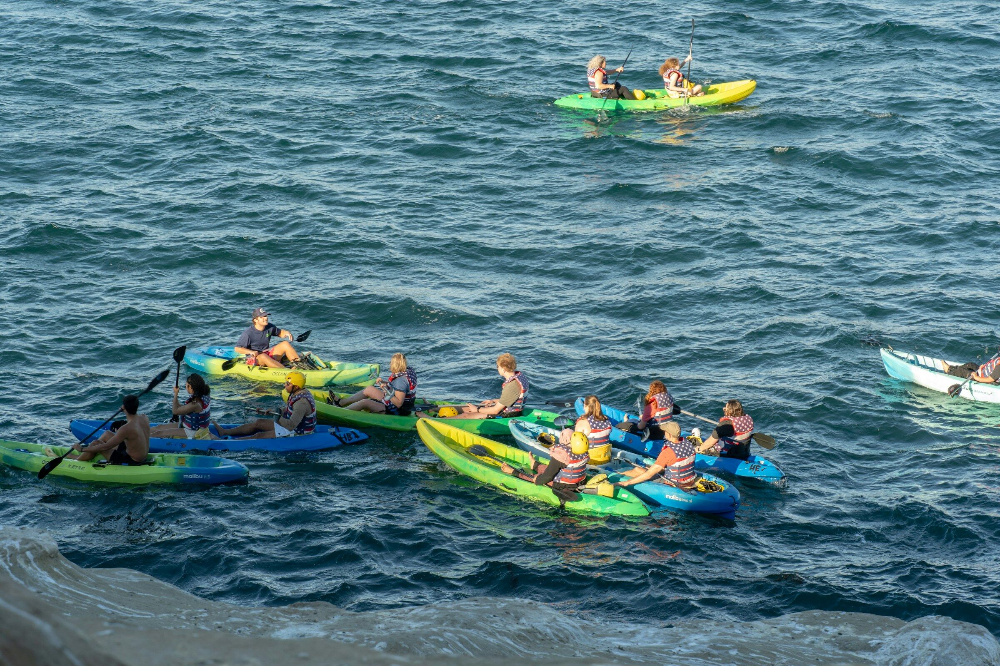

25 Team-Building Activities Adults Actually Enjoy
Team-building activities that don't feel forced: outdoor adventures, food experiences, creative workshops and city games for company retreats of any size.

The best team-building activities don't feel like team building. They are experiences people would happily do with friends, which naturally create conversation, laughter and a bit of shared achievement. Here are 25 that work for adults, grouped by type.
Outdoor and active
- E-bike tour through countryside or vineyards. Easy for all fitness levels thanks to the motor.
- Surf lesson for beginners. Everyone starts at the same level. See our surf retreat guide.
- Kayaking along the coast to caves and hidden beaches, as in the Algarve.
- Guided hike with a picnic at a viewpoint.
- Sailing regatta in small teams, with a skipper per boat.
- Paddleboarding on a calm bay or lake.
- Canyoning for more adventurous groups.
- Yoga or mobility session at sunrise.

Food experiences
- Cooking class with a local chef: paella, pasta, tagine or pierogi.
- Pastel de nata workshop in Lisbon.
- Market tour and lunch with a local guide.
- Olive oil tasting on a working estate.
- Wine tasting in a vineyard in a wine region such as the Douro or Tuscany.
- Long-table dinner in an unusual setting: a vineyard, a beach, a courtyard.
Creative and hands-on
- Tile painting (azulejos) in Portugal.
- Photography walk with a professional photographer.
- Pottery or ceramics workshop.
- Songwriting or improv session with professional facilitators.
- Build a small boat or raft and race it.
City games
- Treasure hunt through an old town, solved on phones in small teams.
- Escape game designed for the whole group.
- Street food tour.
- Photo challenge around the city.
Giving back
- Beach or forest clean-up with a local association.
- Volunteering on a local farm or community project.
How to choose the right activity
- Make it inclusive. Avoid anything that requires high fitness, swimming ability or alcohol for everyone. Offer alternatives.
- Match the goal. Competitive games energise; cooking and creative workshops build connection.
- Keep it short. Two to three hours is ideal, leaving energy for work and free time.
- Mix the groups. Assign teams so people meet colleagues they don't usually work with.
Browse our full team-building activities library, with ideas by destination, or see our team-building retreat format.
Let us organise it
We pick activities that fit your team and destination, and handle everything from guides to transfers. Talk to our expert to get tailored proposals including activities and every participant's flight.
Frequently asked questions
What are good team-building activities for adults?
Cooking classes, e-bike tours, sailing, surf lessons, treasure hunts and creative workshops work well because they are fun, inclusive and naturally social.
How long should a team-building activity last?
Two to three hours is usually ideal during a retreat, leaving time for workshops and free time.
How do you make team building not cringe?
Choose real experiences people would enjoy with friends, keep them optional where possible, and avoid forced sharing or embarrassing challenges.
Let's plan your team's next retreat
Venue, programme, activities and every participant's flight, handled by one team. It starts with a call with our expert.
Keep reading
All articles
Incentive Trip Ideas: How to Reward Your Top Performers
Incentive trip ideas that people remember: destinations, experiences, surprises and how to structure a reward trip for 10 to 100 top performers.

Leadership Retreat Agenda: A 3-Day Template
A proven 3-day leadership retreat agenda with session ideas, timings, facilitation tips and the right venue, for executive teams of 6 to 25 people.

Surf Retreats for Teams: Ericeira, Taghazout and Beyond
Why surf retreats work so well for teams, the best surf destinations for company offsites, how to mix lessons with workshops, and what beginners should know.